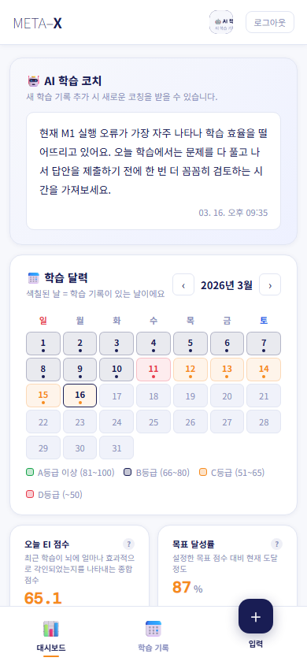
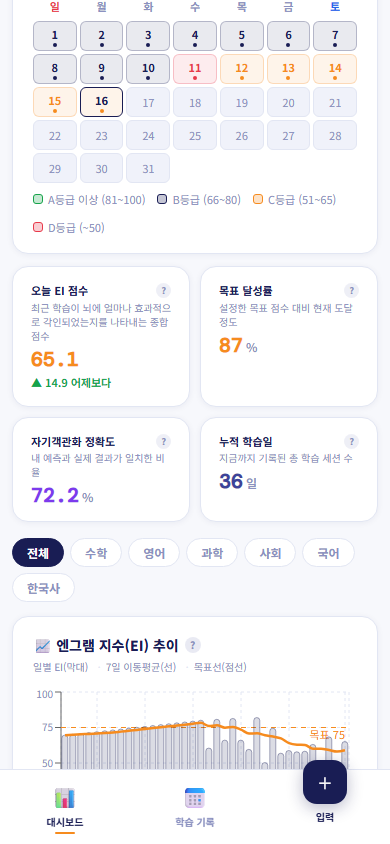
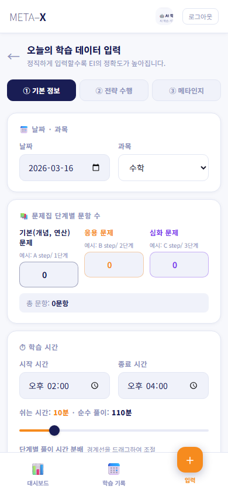

META–X
인지과학 기반 학습 최적화 시스템
📖 사용자 메뉴얼
학습 데이터를 기록하고
내 뇌에 얼마나 잘 각인됐는지 확인하는 방법을
단계별로 알려드립니다.
🎓 초·중등 학생용 가이드
META-X는 내가 공부한 내용을 입력하면
내 뇌에 얼마나 잘 각인됐는지 점수(EI)로 보여주는 앱이에요.
단순히 "몇 시간 공부했어?"가 아니라,
얼마나 효과적으로 공부했는지를 숫자로 확인할 수 있어요.
📊 META-X로 할 수 있는 것
✔
오늘 공부한 내용을 3단계로 기록
✔
나의 엔그램 지수(EI)를 날짜별로 확인
✔
문제 풀이 속도·전략수행·메타인지 분석
✔
AI 학습 코치에게 맞춤 피드백 받기
💡
EI (엔그램 지수)란 내 학습이 뇌에 얼마나 잘 새겨졌는지를 0~100점으로 나타낸 점수예요. 높을수록 좋아요!
1
"이메일로 가입" 클릭
화면 아래쪽 파란 글씨 "이메일로 가입"을 눌러요.
📝 가입 단계 1 — 이메일 인증
이메일 주소를 입력하고 "인증 코드 발송" 버튼을 눌러요.
입력한 이메일로 6자리 인증 코드가 와요. (스팸함도 확인!)
📧
선생님이 알려준 이메일 주소를 사용하세요. 학교 이메일이나 부모님 이메일도 괜찮아요.
📝 가입 단계 2 — 인증 코드 입력
이메일로 받은 6자리 숫자를 입력해요.
그 다음 이름, 학년, 비밀번호를 입력하면 가입 완료!
⚠️
비밀번호 규칙
영문 + 숫자 + 특수문자(!@# 등) 포함, 8자 이상으로 만들어야 해요.
예: Study2024!
🔒
가입 후 선생님의 승인이 필요해요. 승인되기 전에는 로그인이 안 돼요. 선생님께 말씀드리세요!
1
이메일 입력
가입할 때 쓴 이메일 주소를 입력해요.
2
비밀번호 입력
가입할 때 만든 비밀번호를 입력해요.
3
로그인 → 버튼 클릭
파란 버튼을 누르면 대시보드로 이동해요.
💡
자동 로그인에 체크하면 다음에 앱을 열 때 자동으로 로그인돼요. 내 폰/태블릿에서는 체크해두면 편해요!

1
2
3
4
5
6
7
1
🤖 AI 학습 코치
내 최근 데이터를 분석해서 AI가 맞춤 피드백을 줘요. 공부 전에 꼭 읽어보세요!
2
📅 학습 달력
색칠된 날짜 = 학습 기록이 있는 날이에요. 색으로 그날의 EI 등급을 한눈에 볼 수 있어요.
🟢 A등급(81~100) 🔵 B등급(66~80) 🟠 C등급(51~65) 🔴 D등급(~50)
3
오늘 EI 점수
가장 최근 학습의 엔그램 지수예요. 어제보다 올랐는지도 표시돼요.
4
목표 달성률
선생님이 설정한 목표 EI 대비 내 현재 점수가 몇 % 수준인지 보여줘요.
5
📊 대시보드 탭
현재 보고 있는 화면이에요. 그래프와 분석 결과를 볼 수 있어요.
6
+ 입력 버튼
공부하고 나서 이 버튼을 눌러서 오늘의 학습 데이터를 입력해요. 가장 자주 쓰는 버튼!
7
📅 학습 기록 탭
지금까지 입력한 학습 기록 목록을 볼 수 있어요.
📈 아래로 스크롤하면 더 많은 정보가 있어요

1
2
3
4
5
6
7
8
1
과목 필터
전체/수학/영어/과학 등 보고 싶은 과목만 골라서 볼 수 있어요.
2
📈 엔그램 지수(EI) 추이
날짜별 EI 점수를 막대그래프로 보여줘요. 주황색 선은 7일 평균이에요.
이 선이 위로 올라갈수록 학습이 발전하고 있다는 뜻!
3
오늘 EI 점수
가장 최근 기록의 EI예요.
4
목표 달성률
목표 EI 대비 현재 달성 %예요.
5
자기관찰 정확도
"맞을 것 같다/틀릴 것 같다"고 예측한 것이 얼마나 맞았는지예요. 높을수록 나 자신을 잘 알고 있다는 뜻!
6
누적 학습일
지금까지 데이터를 입력한 총 횟수예요. 꾸준히 쌓아가세요!
7
과목 필터 (두 번째)
이 아래 그래프들도 과목별로 필터할 수 있어요.
8
📈 EI 추이 그래프
날짜별로 EI가 어떻게 변했는지 한눈에 보여요. 주황 점선은 내 목표예요.
👆
화면 오른쪽 아래의 + 입력 버튼을 누르면 아래 화면이 나와요!

1
2
3
4
5
6
7
8
9
1
진행 단계 표시
입력은 총 3단계예요. 지금은 ① 기본 정보 단계예요.
2
날짜 선택
오늘 날짜가 자동으로 들어가 있어요. 어제 공부한 걸 입력할 때는 날짜를 바꿔주세요.
3
과목 선택
수학, 영어, 과학, 사회, 한국사, 국어 중 골라요.
4
기본(개념·연산) 문항 수
오늘 푼 문제집의 기본 단계(A step/1단계) 문항 수를 적어요. 수학 전용!
5
응용 문항 수
응용 단계(B step/2단계) 문항 수예요.
6
심화 문항 수
심화 단계(C step/3단계) 문항 수예요. 안 풀었으면 0으로 두면 돼요.
9
쉬는 시간 슬라이더
공부하는 중에 쉰 시간(분)을 슬라이더로 조정해요. 정직하게 입력할수록 EI가 정확해져요!
⚠️
입력한 데이터는 저장 후 수정이 불가해요. 입력 전에 꼭 확인해 주세요!
💡
수학이 아닌 과목(영어·과학 등)은 문항 수 입력란이 1개만 나와요. 총 문항 수만 입력하면 돼요.
다 입력하면 화면 아래 "다음 →" 버튼을 눌러요.
2
체크박스 — ON/OFF
오늘 실제로 한 항목만 체크해요. 안 한 건 체크하지 말아요. 거짓으로 체크하면 EI가 부정확해져요!
3
📊 정량 평가 (0–100점)
white-out RPT, 백지목차 테스트, 마인드맵 등을 얼마나 잘 했는지 0~100점으로 슬라이더를 움직여 입력해요.
4
✅ 정성 수행 (5점 척도)
10배빠른 복습법, 데이터 채점법 등을 얼마나 충실히 했는지 1~5점으로 선택해요.
1=전혀 안 함 / 3=절반 수행 / 5=완벽히 몰입
1
체크된 항목 (파란 체크 ✓)
체크하면 이렇게 파랗게 채워져요.
2
등급 표시 (B)
입력한 점수가 어떤 등급인지 자동으로 표시돼요.
3
슬라이더
체크하면 슬라이더가 나타나요. 좌우로 드래그해서 점수를 조절해요. 오른쪽 숫자가 현재 점수예요.
💡
오늘 한 항목만 체크하고 나머지는 그냥 두면 돼요. 체크 안 한 항목은 자동으로 제외돼요.
1
🧠 CO-IN Filter
문제를 풀 때 "맞을 것 같다/틀릴 것 같다"고 예측한 결과를 4가지로 나눠서 입력해요.
2
C-C (맞을 것 같았고 실제로 맞음)
예측도 맞고 결과도 맞은 문항 수예요. 가장 좋은 경우! 번호 버튼을 눌러서 입력하거나 "직접 입력"칸에 숫자를 써요.
3
C-I (맞을 것 같았으나 틀림)
자신 있었는데 틀린 문항 수예요. 이게 많으면 실수나 과신을 조심해야 해요!
4
I-C (틀릴 것 같았으나 맞음)
자신 없었는데 맞은 문항 수예요. 운이 좋았을 수도 있어요.
5
I-I (틀릴 것 같았고 실제로 틀림)
예측도 틀리고 결과도 틀린 문항 수예요. 정직한 인식!
6
QM 오답분석 (수학 전용)
오답 유형을 6가지로 나눠 입력해요.
Q1: 개념 미숙지 Q2: 추론 실패 Q3: 지식 공백
M1: 계산실수 M2: 문제오독 M3: 단순계산실수
🔢
C-C + C-I + I-C + I-I의 합계가 오늘 푼 전체 문항 수와 같아야 해요. 잘 세어서 입력하세요!
⚠️
CO-IN 값을 하나도 입력하지 않으면 저장이 안 돼요. 반드시 4가지 중 하나라도 입력하세요.
다 입력했으면 화면을 내려서 💾 오늘의 학습 저장 버튼을 눌러요.
저장되면 자동으로 대시보드로 돌아가요.
2
날짜 · 등급
기록한 날짜와 EI 등급(A/B/C/D)이에요.
3
EI 점수
그 날의 엔그램 지수예요. 주황색 숫자가 높을수록 좋아요!
4
문항 정보 태그
기본/응용/심화 몇 문항인지 태그로 표시돼요.
5
3가지 점수 요약
전략수행 점수, 효율성, 메타인지 정확도가 요약돼 있어요. 총 문항·학습시간도 확인 가능해요.
📋
각 기록을 탭하면 상세 내용을 볼 수 있어요. (화면 아래로 스크롤하면 오래된 기록도 볼 수 있어요)
🧠 EI (엔그램 지수)
= 전략수행 35% + 효율성 35% + 메타인지 30%
내 학습이 뇌에 얼마나 잘 새겨졌는지를 나타내는 종합 점수예요.
0~100점으로 표시되며, 81점 이상이면 A등급이에요.
매일 꾸준히 기록하면 변화를 추적할 수 있어요.
📊 전략수행 점수
= 학습 전략을 얼마나 충실히 실천했는가
white-out RPT, 백지목차 테스트, 마인드맵 등의 학습 전략을 실제로 얼마나 잘 했는지를 점수화한 거예요.
정직하게 입력할수록 정확한 점수가 나와요.
⚡ 효율성 (문제풀이 속도)
= 순공부 시간 대비 문제 처리 속도
같은 시간에 얼마나 많은 문제를 효율적으로 풀었는지 측정해요.
문제 1개 당 목표 시간: 기본 60초 / 응용 90초 / 심화 150초 (수학 기준)
쉬는 시간을 정직하게 입력해야 정확해요!
🎯 CO-IN이란?
Cognition-Insight의 줄임말
C-I ⚠️
맞을 것 같았는데
틀림 (과신 주의!)
C-C와 I-I가 많을수록 자기 실력을 잘 알고 있는 거예요.
C-I (과신 오류)가 많으면 조심해야 해요!
Q. 로그인이 안 돼요.
선생님의 승인이 필요해요. 가입 후 선생님께 "META-X 승인해주세요"라고 말씀드리세요!
Q. 저장 버튼이 안 눌려요.
① 문항 수가 0이거나 ② 시작/종료 시간이 이상하거나 ③ CO-IN을 하나도 입력 안 했을 때예요.
오류 메시지를 확인하고 빠진 부분을 채워주세요.
Q. 입력을 잘못했어요. 수정하고 싶어요.
저장된 데이터는 수정이 안 돼요. 삭제 후 다시 입력해야 해요. 학습 기록에서 해당 기록을 찾아 삭제할 수 있어요.
Q. EI 점수가 너무 낮아요. 어떻게 올려요?
전략수행 + 효율성 + 메타인지 세 가지 모두 신경 써야 해요.
① 학습 전략을 더 꼼꼼히 실천하고
② 쉬는 시간 줄이고 집중해서 풀고
③ 문제 풀 때 "이거 맞을 것 같나?" 예측하는 습관을 들여보세요!
Q. 매일 입력해야 하나요?
공부한 날마다 입력하는 게 좋아요! 기록이 쌓일수록 AI 분석이 더 정확해지고, 달력이 색깔로 채워지는 걸 보면 뿌듯해요 😊